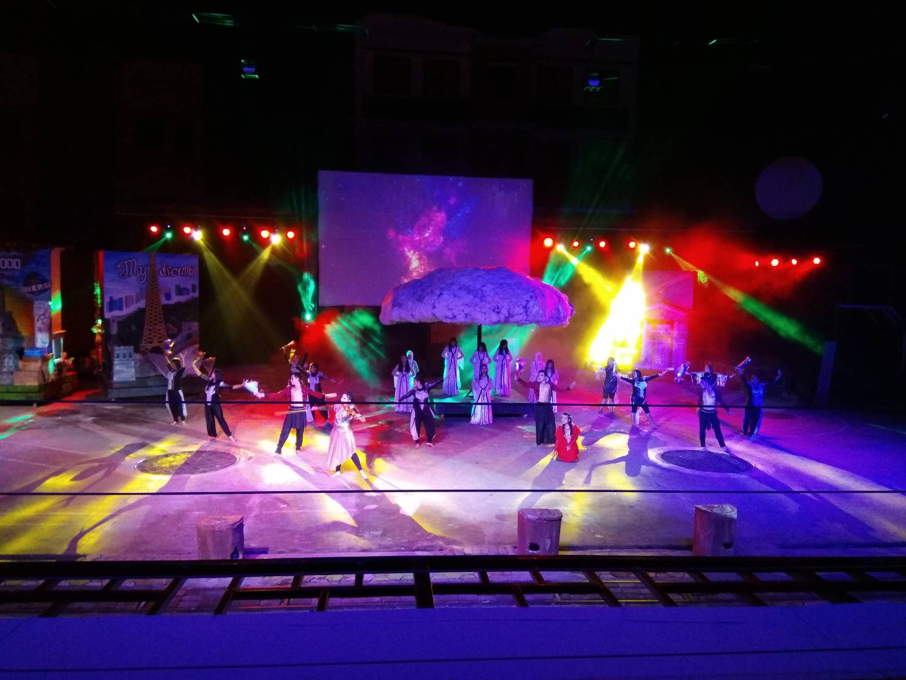

OUR FOURTH DAY! GOODBYE DONOMULYO VILLAGE! HELLO SELAMAT PAGI INDONESIA!
This was the last day we get to see our fellow villager friends. We had goodbyes and we packed our bags ready to leave the village. It wasn't really sad but it was motivational, after all the things we learned from the live in experience.
On the same day we all left the village, we arrived to a school called "Selamat Pagi Indonesia". It is a free school filled with hard working senior high students that work for their own school money. They are well known for their products, hotel service, and performances, which we got to witness. We witnessed their poultry farm. We also seen their business plans and their snacks & products. However, the most unique part was their hotel, it was so much more different compared to an average hotel. Their towels are shaped into animals, and their walls also contained pictures of animals. The performance we witnessed that night was called "The Blaze of Glory". Our crew also bought alot of merchandise and snacks to bring home. Late at night we finally arrived to the Green Spencer Hotel, the hotel we get to spend the rest of our nights in Malang.
